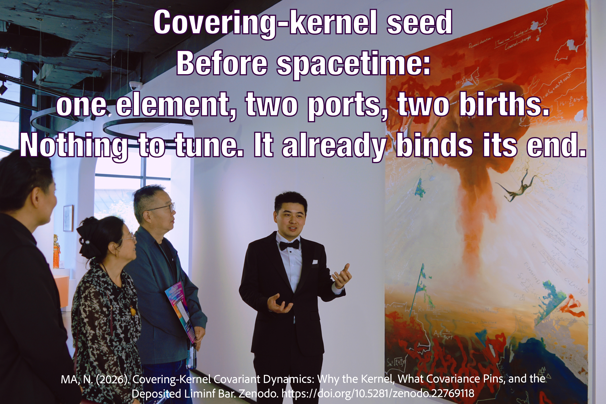

Programme note · 4 October 2026 · Nanjie Ma ·
ORCID 0009-0002-4415-1209
About / Work subpage. A fair reading of first laws as seeds. Not a homepage hero. Not a league table of research programmes. Not a breakthrough notice. Not cosmogenesis payment.
That sentence is what the covering seed is. It is not a claim that this seed is already the origin of the universe, and it is not a claim that it has overtaken causal-set sequential growth.

Exhibition talk, 2025. Overlay slogan and Companion 25 citation. The photograph is an illustration of the public sentence, not a proof and not a deposit.
A programme has a seed only if its first object does not already contain the spacetime it is supposed to produce. Inflation, asymptotic safety, perturbative string theory, holography, ekpyrotic and cyclic models, conformal cyclic cosmology, and the no-boundary proposal start from a spacetime or from a sum over geometries. They may be important physics. On this ruler they are not genesis seeds. That classifies the starting object. It does not say those programmes failed, and it does not cancel what they have already delivered.
Among objects that do try to begin before spacetime, three are live enough to compare as first laws: causal-set sequential growth (Rideout–Sorkin), the covering kernel of this programme, and the IKKT matrix model. Hypergraph rewriting has no named law. Loop quantum gravity, group field theory, causal dynamical triangulations, and graphity presuppose a world symmetry, a foliation, or an external time, or they reach their terminal states only through chosen couplings.
Start with one element and two free ports. A T1 birth uses one port of an element; the newborn covers that element and receives two ports. A T2 birth uses one port each of two incomparable elements; the newborn covers both and receives two ports. No other move creates ports. Inside these axioms there are exactly two kinds of generator. Several terminal facts hold for every law on this move set, with no free number: valence is bounded; links plus free ports equal twice the number of elements. Those facts are why the slogan says the seed already binds its end. They are not a unique first law, and they are not spacetime.
Under each seed’s own choice-free law, the terminal state sits at an extreme: pure time, or wide and short. No choice-free law of any seed produces a balanced, manifold-like order. Whatever principle is still missing has to act in the middle, for every programme.
Causal-set sequential growth presently looks more likely as the true seed family. Its form is forced by label independence and causal locality. The world’s causal relation already lies inside its own state space, so a later handoff is not required. Its remaining gap is which member of the family, and that gap is inside the seed. The one choice-free member (indifference over generating subsets) ends as pure time: it does not build a large spatial region. That is a real gap. It is still a smaller gap than needing a later stage that has not been named.
The covering kernel is a genuine seed: it presupposes no manifold, no Lorentz group, and no dimension. It has the strongest choice-free terminal facts of any seed compared here. If it were true, it would predict more than causal-set sequential growth. Predicting more is not evidence of being true. The move set was written as a minimal instantiation, not derived from independently motivated principles. While the port budget stands, causal locality already fails at three elements. Label independence alone does not select the measure. The covering order at its own fine level is not a spacetime causal set: a Lorentzian sprinkling of dimension two or more has unbounded mean links per element, and even a 1+1 causal interval exceeds the covering link ceiling at modest size. So if this seed is true, our world is not its fine order. A later release law, or a coarse reading fixed in advance, would still have to be exhibited. Neither example is on record.
The IKKT matrix model has a rigid action once ten-dimensional Lorentz symmetry and maximal supersymmetry are granted. Those symmetries are the kind of structure a genesis account should produce, and here they are inputs. The version with time is not choice-free.
The on-record mathematics of covering-kernel covariant dynamics remains the companion deposits. This page only asks which first law, judged as a seed, is presently more likely to be the true beginning.
Covering kernel · foundational work Companion 25 · Zenodo Parent paper · Zenodo ORCID